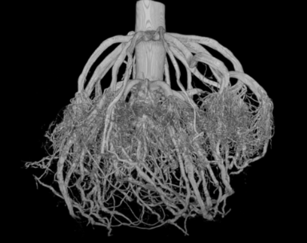
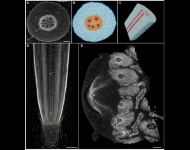
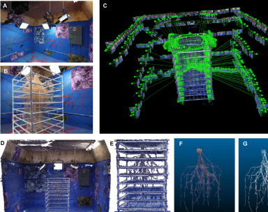
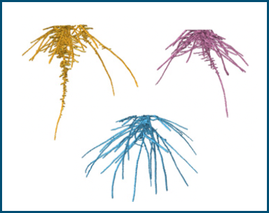

Mission statement
The mission of the Topp lab is to enhance sustainable crop production and plant
ecosystem services through more efficient and effective root systems.
VISION
We seek to understand root biology and the soil ecosystem and to integrate this
knowledge into agricultural science for the benefit of humanity. Our research is
designed to push the frontiers of science in order to fill knowledge gaps that have
long hindered the understanding of root system structure and function. We pursue our
goals through:
(1) The development of diverse phenomics tools that enable the study of root biology
and its role in the soil ecosystem
(2) Leveraging these tools to understand the genetic and mechanistic basis of root
growth and its environmental conditioning for application towards a sustainable
future in agriculture
(3) Developing a diverse group of scientists at all levels who value collaboration
and trust, conducting world-leading research in a spirit of mutual respect and
cooperation.
(4) Communicate our unique scientific projects to maximize the benefit of our work
for all stakeholders, inside and outside the lab.
Research approaches

X-ray CT
for non-invasive 3D imaging of plant roots. A
partnership with Valent BioSciences in 2016, along with funding from the
National Science Foundation, brought one of these 8-ton machines to the
Danforth Center.

X-ray microscopy
. The success of the Xray instrument soon led
to a smaller, but more powerful X-ray microscope to look at
root-microbial interactions. Now the Topp lab can see the 3D
subterranean world of roots nondestructively, at least for plants
growing in large containers. The Topp lab’s X-ray CT and microscope
facility for plant science at the Danforth Center is unique in the
world.

Modern mesocosms
Mesocosms can allow for unconstrained root
growth, excavation and preservation of 3-dimensional RSA, and modularity
that facilitates the use of a variety of sensors.

Root genetics
By comparing different genotypes that were bred or
naturally selected for different growth traits and combining with
molecular analysis, we aim to identify genes that can help generate more
stress resistant and sustainable crops.
Grants
- 2021-2026 | NSF: Biology Integration Institute (BII) New Roots for Restoration:
integrating plant traits, communities, and the soil ecosphere to advance
restoration of natural and agricultural systems
- 2021-2023 | private funding: Subterranean Influences on the Nitrogen Cycle
(SINC)
- 2021-2022 | N2 New West Genetics hemp project
- 2021-2024 | FFAR: Evaluating the Relative Influence of Maize Breeding, Field
Management and Environmental Setting on Crop Production, and Sustainability
Targets
- 2018-2024 [extended 3 years] | Sumitomo Chemical Company: Enhancing the
Root-Rhizosphere Phenomics Platform for Improving Crop Productivity
- 2016-2024 [extended 3 years] | Valent BioSciences: Advanced Root Phenomics
Platform for Improving Crop Productivity
- 2020-2025 | DOE-BER: Interrogating pennycress natural and induced variation to
improve abiotic stress tolerance and oilseed bioenergy crop resilience
- 2020-2023 | NSF-IOS RESEARCH-PGR 1947609: Characterizing the Genomic Basis of
Weedy Rice Competitiveness
- 2020-2021 | IN2 mobius slow release biodegradable fertilizers